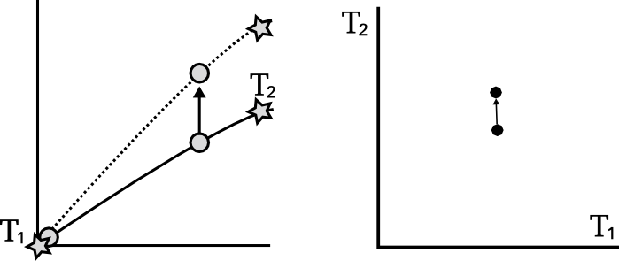

Differentially Private
Gaussian Processes
Presented by Mike Smith
m.t.smith@sheffield.ac.uk
Michael Thomas Smith, Max Zwiessele, Mauricio A Alvarez Lopez, Neil D. Lawrence
Differential Privacy for GPs
We have a dataset in which the inputs, $X$, are public. The outputs, $\mathbf{y}$, we want to keep private.
Data consists of the heights and weights of 287 women from a census of the !Kung
Vectors and Functions
Hall et al. (2013) showed that one can ensure that a version of $f$, function $\tilde{f}$ is $(\varepsilon, \delta)$-differentially private by adding a scaled sample from a GP prior.

3 pages of maths ahead!
Applied to Gaussian Processes
We applied this method to the GP posterior.
The covariance of the posterior only depends on the inputs, $X$. So we can compute this without applying DP.
The mean function, $f_D(\mathbf{x_*})$, does depend on $\mathbf{y}$. $f_D(\mathbf{x_*}) = \mathbf{k}_*^\top K^{-1} \mathbf{y}$
We are interested in finding $|| f_D(\mathbf{x_*}) - f_{D^\prime}(\mathbf{x_*}) ||_H^2$
...how much the mean function (in RKHS) can change due to a change in $\mathbf{y}$.
Applied to Gaussian Processes
Using the representer theorem, we can write $|| f_D(\mathbf{x_*}) - f_{D^\prime}(\mathbf{x_*}) ||_H^2$
as:
$\Big|\Big|\sum_{i=1}^n k(\mathbf{x_*},\mathbf{x}_i) \left(\alpha_i - \alpha^\prime_i\right)\Big|\Big|_H^2$
where $\mathbf{\alpha} - \mathbf{\alpha}^\prime = K^{-1} \left(\mathbf{y} - \mathbf{y}^\prime \right)$
$\Big|\Big|\sum_{i=1}^n k(\mathbf{x_*},\mathbf{x}_i) \left(\alpha_i - \alpha^\prime_i\right)\Big|\Big|_H^2$
where $\mathbf{\alpha} - \mathbf{\alpha}^\prime = K^{-1} \left(\mathbf{y} - \mathbf{y}^\prime \right)$
We constrain the kernel: $-1\leq k \leq 1$ and we only allow one element of $\mathbf{y}$ and $\mathbf{y}'$ to differ (by at most $d$).
So only one column of $K^{-1}$ will be involved in the change of mean (which we are summing over).
The distance above can then be shown to be no greater than $d\;||K^{-1}||_\infty$
Applied to Gaussian Processes
This 'works' in that it allows DP predictions...but to avoid too much noise, the value of $\varepsilon$ is too large (here it is 100)

EQ kernel, $l = 25$ years, $\Delta=100$cm
Inducing Inputs
Using sparse methods (i.e. inducing inputs) can help reduce the sensitivity a little.
Cloaking
So far we've made the whole posterior mean function private...
...what if we just concentrate on making particular predictions private?
Effect of perturbation
Previously I mentioned that the noise is sampled from the GP's prior.
This is not necessarily the most 'efficient' covariance to use.

Effect of perturbation
Cloaking
Left: Ideal covariance. Right: actual covariance

DP Vectors
Hall et al. (2013) also presented a bound on vectors.
Find a bound ($\Delta$) on the scale of the output change, in term of its Mahalanobis distance (wrt the added noise covariance).
$\sup_{D \sim {D'}} ||M^{-1/2} (\mathbf{y}_* - \mathbf{y}_{*}')||_2 \leq \Delta$
We use this to scale the noise we add:
$\frac{\text{c}(\delta)\Delta}{\varepsilon} \mathcal{N}_d(0,M)$
We get to pick $M$
Cloaking
Intuitively we want to construct $M$ so that it has greatest covariance in those directions most affected by changes in training points, so that it will be most able to mask those changes.
The change in posterior mean predictions is,
$\mathbf{y}_* - \mathbf{y}'_* = K_{*f} K^{-1} (\mathbf{y}-\mathbf{y}')$
The effect of perturbing each training point on each test point is represented in the cloaking matrix, $C = K_{*f} K^{-1}$
Cloaking
We assume we are protecting only one training input's change, by at most $d$.
So $\mathbf{y}-\mathbf{y}'$ will be all zeros except for one element, $i$.
So the change in test points will be (at most)
$\mathbf{y}_*' - \mathbf{y}_* = d C_{:i}$
We're able to write the earlier bound as,
$d^2 \sup_{i} \mathbf{c}_i^\top M^{-1} \mathbf{c}_i \leq \Delta$
where $\mathbf{c}_i \triangleq C_{:i}$
Cloaking
Dealing with $d$ elsewhere and setting $\Delta = 1$ (thus $0 \leq \mathbf{c}_i^\top M^{-1} \mathbf{c}_i \leq 1$) and minimise $\log |M|$
(minimises the partial entropy).
Using lagrange multipliers and gradient descent, we find
$M = \sum_i{\lambda_i \mathbf{c}_i \mathbf{c}_i^\top}$
Cloaking: Results
Noise is now practical, and has interesting features;
- Less noise where data is concentrated
- Least noise far from any data
- Most noise just outside data
EQ kernel, $l = 25$ years, $\Delta=100$cm, $\varepsilon=1$
House prices around London
Citibike
Tested on 4d citibike dataset (predicting journey durations from start/finish station locations).
The method appears to achieve lower noise than binning alternatives (for reasonable $\varepsilon$).
lengthscale in degrees, values above, journey duration (in seconds)Summary
We have developed an improved method for performing differentially private regression.
Unlike binning this can scale to increased numbers of dimensions
Future work
Multiple outputs
GP classification
DP Optimising hyperparameters
Making the inputs private
The go-to book on differential privacy, by Dwork and Roth;
Dwork, Cynthia, and Aaron Roth. "The algorithmic foundations of differential privacy." Theoretical Computer Science 9.3-4 (2013): 211-407.
link
I found this paper allowed me to start applying DP to GP;
Hall, Rob, Alessandro Rinaldo, and Larry Wasserman. "Differential privacy for functions and functional data." The Journal of Machine Learning Research 14.1 (2013): 703-727.
link
Data set of !Kung anthropometric measurements;
Howell, N. Data from a partial census of the !kung san, dobe. 1967-1969. link, 1967.
Thanks
Funders: EPSRC